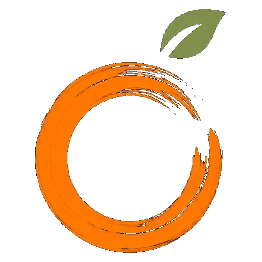

APELSININTERIORДемо для обсуждения · главная страницаМы собрали вашу главную страницу в четырёх вариантах: от текущей версии сайта до полного редизайна. Везде только ваш реальный контент — проекты, цены, команда. Переключаться между вариантами можно панелью внизу экрана.